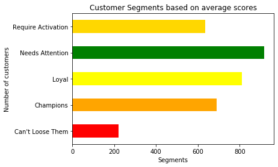

RFM Analysis identifies existing customers who are most likely to remain loyal to a company or respond to a new product. Among other things, RFM analysis allows us to create customized and personalized messaging, which can be used to streamline the various messages you send to a specific customer and continue sending messages of only a particular type, thereby reducing the chance of dissatisfaction or annoyanc while creating higher customer satisfaction. RFM is a model based on historical data and helps forecast future behavior based on past interactions. The RFM Model of customer value uses proven marketing principles to help businesses differentiate between marketing to existing customers versus new users, allowing businesses to create relevant and personalized messaging by understanding user behavior. The model allows businesses to segment its users according to three criteria based on an existing customer’s transaction history, namely:
The RFM model, when used in conjunction with traditional models of segmentation, can help businesses visualize new and existing customers differently, and thus create favourable conditions to maximize customer lifetime value.
How do we segment our customers to reach them effectively through targeted marketing?
By applying the Pareto principle to a customer database, it is often the case that 80% of a company’s revenue comes from 20% of its customers. RFM helps determine who the top 20% customers are and groups the remaining customers into other segments, such as price-sensitive, potentially loyal, brand sensitive, etc. This ensures that each customer is better targeted, converting the other segments into the higher-value segments, and increases customer lifetime value.
In this Project, the customer sales data from January 2011 to May 2011 of an e-commerce store are analyzed to group customers from the United Kingdom into segments using the RFM model. The relevant libraries and the provided dataset are imported into the Python environment.
There are eight variables in the dataset:
import pandas as pd
import numpy as np
import seaborn as sns
from datetime import timedelta
import matplotlib.pyplot as plt
pd.set_option("display.max_columns",None);
pd.set_option("display.max_rows",None);
#load data
url = 'https://raw.githubusercontent.com/Master-of-Business-Analytics/Project_06_RFM_Analysis/master/data.csv'
df = pd.read_csv(url, error_bad_lines=False,encoding= 'unicode_escape')
df.head(5)| InvoiceNo | StockCode | Description | Quantity | InvoiceDate | UnitPrice | CustomerID | Country | |
|---|---|---|---|---|---|---|---|---|
| 0 | 540558 | 21258 | ? | -29 | 1/10/2011 10:04 | 0.00 | NaN | United Kingdom |
| 1 | 540560 | 21589 | NaN | -14 | 1/10/2011 10:08 | 0.00 | NaN | United Kingdom |
| 2 | 540561 | 22343 | PARTY PIZZA DISH RED RETROSPOT | 24 | 1/10/2011 10:32 | 0.21 | 13004.0 | United Kingdom |
| 3 | 540561 | 22344 | PARTY PIZZA DISH PINK POLKADOT | 24 | 1/10/2011 10:32 | 0.21 | 13004.0 | United Kingdom |
| 4 | 540561 | 47504H | ENGLISH ROSE SPIRIT LEVEL | 24 | 1/10/2011 10:32 | 0.85 | 13004.0 | United Kingdom |
The dataset seems to be relatively clean at first glance, but it is actually riddled with null values. The code chunk below creates a new column that calculates the total purchase for each transaction. The NA values are also identified, and the rows containing these NA values are removed.
There are several methods of removing NA values from a dataset, such as replacing the NA value with another value or deleting the row entirely. The latter method, to choose removing the row entirely, is dependent on what data have already been manipulated and how much data are available.
df.describe()| Quantity | UnitPrice | CustomerID | |
|---|---|---|---|
| count | 290603.000000 | 290603.000000 | 214539.000000 |
| mean | 8.363265 | 4.302626 | 15528.122756 |
| std | 292.791363 | 72.531652 | 1592.760180 |
| min | -80995.000000 | 0.000000 | 12346.000000 |
| 25% | 1.000000 | 1.250000 | 14159.000000 |
| 50% | 3.000000 | 2.100000 | 15493.000000 |
| 75% | 10.000000 | 4.130000 | 16923.000000 |
| max | 80995.000000 | 17836.460000 | 18287.000000 |
In any event, it is good practice to sift out erroneous transactions, particularly when they result in extreme outliers. In this section, the large transactions are scanned to clean the data. More information on data cleaning can be found in our Data Cleaning Project.
# information about the data set
print('{:,} rows; {:,} columns'
.format(df.shape[0], df.shape[1]))
print('{:,} transactions don\'t have a customer id'
.format(df[df.CustomerID.isnull()].shape[0]))
print('Transactions timeframe from {} to {}'.format(df['InvoiceDate'].min(),
df['InvoiceDate'].max()))
#Eliminating NA rows in Cstomer ID
df=df[df.notnull().all(axis=1)] #eliminating NA 290,603 rows; 8 columns
76,064 transactions don't have a customer id
Transactions timeframe from 1/10/2011 10:04 to 5/20/2011 14:06print('{:,} rows; {:,} columns'
.format(df.shape[0], df.shape[1])) 214,539 rows; 8 columns
#remove mi
df.drop(index=[df['Quantity'].idxmax(), df['Quantity'].idxmin()], inplace=True)
df.describe()| Quantity | UnitPrice | CustomerID | |
|---|---|---|---|
| count | 214537.000000 | 214537.000000 | 214537.000000 |
| mean | 10.561642 | 3.048388 | 15528.114199 |
| std | 232.168351 | 14.165101 | 1592.765139 |
| min | -74215.000000 | 0.000000 | 12346.000000 |
| 25% | 2.000000 | 1.250000 | 14159.000000 |
| 50% | 4.000000 | 1.950000 | 15493.000000 |
| 75% | 12.000000 | 3.750000 | 16923.000000 |
| max | 74215.000000 | 3155.950000 | 18287.000000 |
df.drop(index=[df['Quantity'].idxmax(), df['Quantity'].idxmin()], inplace=True)
df.describe()| Quantity | UnitPrice | CustomerID | |
|---|---|---|---|
| count | 214535.000000 | 214535.000000 | 214535.000000 |
| mean | 10.561741 | 3.048407 | 15528.143865 |
| std | 50.550843 | 14.165166 | 1592.742929 |
| min | -3114.000000 | 0.000000 | 12747.000000 |
| 25% | 2.000000 | 1.250000 | 14159.000000 |
| 50% | 4.000000 | 1.950000 | 15493.000000 |
| 75% | 12.000000 | 3.750000 | 16923.000000 |
| max | 12540.000000 | 3155.950000 | 18287.000000 |
Note that the minimum quantity and maximum quantity have different absolute values.
df = df[df['UnitPrice']>0]
df.describe()| Quantity | UnitPrice | CustomerID | |
|---|---|---|---|
| count | 214516.000000 | 214516.000000 | 214516.000000 |
| mean | 10.503361 | 3.048677 | 15528.224948 |
| std | 42.705725 | 14.165764 | 1592.710040 |
| min | -3114.000000 | 0.001000 | 12747.000000 |
| 25% | 2.000000 | 1.250000 | 14159.000000 |
| 50% | 4.000000 | 1.950000 | 15493.000000 |
| 75% | 12.000000 | 3.750000 | 16923.000000 |
| max | 4800.000000 | 3155.950000 | 18287.000000 |
# Convert InvoiceDate from object to datetime format
df['InvoiceDate'] = pd.to_datetime(df['InvoiceDate'])
#creating a total sales column
df["Totalsum"] = df['Quantity'] * df['UnitPrice']
#Check the remaining large negative transactions
df[df.Totalsum<0].sort_values('Totalsum').head(10)| InvoiceNo | StockCode | Description | Quantity | InvoiceDate | UnitPrice | CustomerID | Country | Totalsum | |
|---|---|---|---|---|---|---|---|---|---|
| 257377 | C550456 | 21108 | FAIRY CAKE FLANNEL ASSORTED COLOUR | -3114 | 2011-04-18 13:08:00 | 2.10 | 15749.0 | United Kingdom | -6539.40 |
| 257375 | C550456 | 85123A | WHITE HANGING HEART T-LIGHT HOLDER | -1930 | 2011-04-18 13:08:00 | 2.55 | 15749.0 | United Kingdom | -4921.50 |
| 257373 | C550456 | 48185 | DOORMAT FAIRY CAKE | -670 | 2011-04-18 13:08:00 | 6.75 | 15749.0 | United Kingdom | -4522.50 |
| 257376 | C550456 | 21175 | GIN + TONIC DIET METAL SIGN | -2000 | 2011-04-18 13:08:00 | 1.85 | 15749.0 | United Kingdom | -3700.00 |
| 257374 | C550456 | 47566B | TEA TIME PARTY BUNTING | -1300 | 2011-04-18 13:08:00 | 2.55 | 15749.0 | United Kingdom | -3315.00 |
| 275098 | C549452 | D | Discount | -1 | 2011-04-08 14:17:00 | 1867.86 | 17940.0 | United Kingdom | -1867.86 |
| 35080 | C570556 | 22273 | FELTCRAFT DOLL MOLLY | -720 | 2011-10-11 11:10:00 | 2.55 | 16029.0 | United Kingdom | -1836.00 |
| 35074 | C570556 | 22273 | FELTCRAFT DOLL MOLLY | -720 | 2011-10-11 11:10:00 | 2.30 | 16029.0 | United Kingdom | -1656.00 |
| 69265 | C569387 | 23284 | DOORMAT KEEP CALM AND COME IN | -200 | 2011-10-03 16:49:00 | 7.08 | 14031.0 | United Kingdom | -1416.00 |
| 35081 | C570556 | 20971 | PINK BLUE FELT CRAFT TRINKET BOX | -1296 | 2011-10-11 11:10:00 | 1.06 | 16029.0 | United Kingdom | -1373.76 |
# Customer 15749 is in the top 10
df[df.CustomerID==15749].sort_values('Totalsum').head(10)| InvoiceNo | StockCode | Description | Quantity | InvoiceDate | UnitPrice | CustomerID | Country | Totalsum | |
|---|---|---|---|---|---|---|---|---|---|
| 257377 | C550456 | 21108 | FAIRY CAKE FLANNEL ASSORTED COLOUR | -3114 | 2011-04-18 13:08:00 | 2.10 | 15749.0 | United Kingdom | -6539.4 |
| 257375 | C550456 | 85123A | WHITE HANGING HEART T-LIGHT HOLDER | -1930 | 2011-04-18 13:08:00 | 2.55 | 15749.0 | United Kingdom | -4921.5 |
| 257373 | C550456 | 48185 | DOORMAT FAIRY CAKE | -670 | 2011-04-18 13:08:00 | 6.75 | 15749.0 | United Kingdom | -4522.5 |
| 257376 | C550456 | 21175 | GIN + TONIC DIET METAL SIGN | -2000 | 2011-04-18 13:08:00 | 1.85 | 15749.0 | United Kingdom | -3700.0 |
| 257374 | C550456 | 47566B | TEA TIME PARTY BUNTING | -1300 | 2011-04-18 13:08:00 | 2.55 | 15749.0 | United Kingdom | -3315.0 |
| 257775 | 550461 | 47556B | TEA TIME TEA TOWELS | 1300 | 2011-04-18 13:20:00 | 2.10 | 15749.0 | United Kingdom | 2730.0 |
| 2204 | 540818 | 47556B | TEA TIME TEA TOWELS | 1300 | 2011-01-11 12:57:00 | 2.55 | 15749.0 | United Kingdom | 3315.0 |
| 257777 | 550461 | 21175 | GIN + TONIC DIET METAL SIGN | 2000 | 2011-04-18 13:20:00 | 1.69 | 15749.0 | United Kingdom | 3380.0 |
| 2143 | 540815 | 21175 | GIN + TONIC DIET METAL SIGN | 2000 | 2011-01-11 12:55:00 | 1.85 | 15749.0 | United Kingdom | 3700.0 |
| 257776 | 550461 | 48185 | DOORMAT FAIRY CAKE | 670 | 2011-04-18 13:20:00 | 6.35 | 15749.0 | United Kingdom | 4254.5 |
# removing cancelled orders
#index 257377,257778, 257375, 257373,2142,2205,2143,257374,257376,2204 - all calcellations
df.drop(index=[257377,257778, 257375, 257373,2142,2205,2143,257374,257376,2204], inplace=True)
# customer 16029
df[df.CustomerID==16029].sort_values('InvoiceDate').head(10)| InvoiceNo | StockCode | Description | Quantity | InvoiceDate | UnitPrice | CustomerID | Country | Totalsum | |
|---|---|---|---|---|---|---|---|---|---|
| 25750 | C540030 | 22070 | SMALL RED RETROSPOT MUG IN BOX | -24 | 2011-01-04 13:47:00 | 3.75 | 16029.0 | United Kingdom | -90.00 |
| 25749 | 540029 | 22207 | FRYING PAN UNION FLAG | 24 | 2011-01-04 13:47:00 | 3.75 | 16029.0 | United Kingdom | 90.00 |
| 5679 | 541105 | 85099F | JUMBO BAG STRAWBERRY | 200 | 2011-01-13 14:34:00 | 1.65 | 16029.0 | United Kingdom | 330.00 |
| 5680 | 541105 | 22386 | JUMBO BAG PINK POLKADOT | 200 | 2011-01-13 14:34:00 | 1.65 | 16029.0 | United Kingdom | 330.00 |
| 13090 | 541610 | 84880 | WHITE WIRE EGG HOLDER | 17 | 2011-01-20 10:18:00 | 4.95 | 16029.0 | United Kingdom | 84.15 |
| 13091 | 541610 | 22207 | FRYING PAN UNION FLAG | 48 | 2011-01-20 10:18:00 | 3.75 | 16029.0 | United Kingdom | 180.00 |
| 13092 | 541610 | 21928 | JUMBO BAG SCANDINAVIAN PAISLEY | 100 | 2011-01-20 10:18:00 | 1.65 | 16029.0 | United Kingdom | 165.00 |
| 13093 | 541611 | 79321 | CHILLI LIGHTS | 96 | 2011-01-20 10:18:00 | 3.82 | 16029.0 | United Kingdom | 366.72 |
| 13094 | 541611 | 22779 | WOODEN OWLS LIGHT GARLAND | 48 | 2011-01-20 10:18:00 | 3.37 | 16029.0 | United Kingdom | 161.76 |
| 19493 | 541992 | 85099B | JUMBO BAG RED RETROSPOT | 100 | 2011-01-25 09:31:00 | 1.65 | 16029.0 | United Kingdom | 165.00 |
# removing rows with the large equal absolute values
df.drop(index=[35090,35080,35074,83508,35077,83505,35075,35084,35076,83502,35089,35071,35072,35032,35088,35026,83471,35082,35079,35073,83469,35087], inplace=True)
df.describe()| Quantity | UnitPrice | CustomerID | Totalsum | |
|---|---|---|---|---|
| count | 214484.000000 | 214484.000000 | 214484.000000 | 214484.000000 |
| mean | 10.504928 | 3.048726 | 15528.163290 | 17.793502 |
| std | 40.050825 | 14.166812 | 1592.820059 | 62.596212 |
| min | -1350.000000 | 0.001000 | 12747.000000 | -1867.860000 |
| 25% | 2.000000 | 1.250000 | 14159.000000 | 3.750000 |
| 50% | 4.000000 | 1.950000 | 15493.000000 | 9.950000 |
| 75% | 12.000000 | 3.750000 | 16923.000000 | 17.700000 |
| max | 4800.000000 | 3155.950000 | 18287.000000 | 6539.400000 |
The customer records are grouped by the recency of the purchases, the frequency of the quantities, and the monetary value of the purchases.
To calculate recency, a snapshot date is created. This date is one day after the most recent invoice date of the dataset. The date difference is used to show the recency of the purchase.
# Create snapshot date
snapshot_date = df['InvoiceDate'].max() + timedelta(days=1) # set current date as most recent date plus one day
rec_df = snapshot_date-df.groupby("CustomerID").agg({"InvoiceDate":max})
#group customers by their most recent purchase
rec_df.rename(columns={"InvoiceDate": "Recency"}, inplace=True)#rename column
rec_df=rec_df["Recency"].apply(lambda x: x.days) #extracting number of days only
rec_df.head(5)
CustomerID
12747.0 2
12748.0 1
12749.0 4
12820.0 3
12823.0 255
Name: Recency, dtype: int64
To calculate the frequency, the number of invoices per customer is calculated.
freq_df = df.groupby("CustomerID").agg({'InvoiceNo': 'count'})
freq_df.rename(columns={"InvoiceNo": "Frequency"}, inplace=True)#rename column
freq_df.head()| Frequency | |
|---|---|
| CustomerID | |
| 12747.0 | 50 |
| 12748.0 | 2729 |
| 12749.0 | 114 |
| 12820.0 | 45 |
| 12823.0 | 3 |
To calculate the monetary score, the total value of each customer’s purchases is calculated.
mon_df = df.groupby("CustomerID").agg({'Totalsum': 'sum'})
mon_df.rename(columns={"Totalsum": "Monetary"}, inplace=True)#rename column
mon_df.head(5)| Monetary | |
|---|---|
| CustomerID | |
| 12747.0 | 2040.43 |
| 12748.0 | 15727.57 |
| 12749.0 | 2194.75 |
| 12820.0 | 724.57 |
| 12823.0 | 994.50 |
rfm=pd.concat([rec_df,freq_df, mon_df], axis=1) #combining all scores
rfm.head(7)| Recency | Frequency | Monetary | |
|---|---|---|---|
| CustomerID | |||
| 12747.0 | 2 | 50 | 2040.43 |
| 12748.0 | 1 | 2729 | 15727.57 |
| 12749.0 | 4 | 114 | 2194.75 |
| 12820.0 | 3 | 45 | 724.57 |
| 12823.0 | 255 | 3 | 994.50 |
| 12824.0 | 60 | 25 | 397.12 |
| 12826.0 | 3 | 62 | 964.20 |
The customers are ranked in each of the three criteria (R,F, and M). Each criteria is broken into five buckets, and customer scores are assigned based on the relative percentile of each RFM feature, with each bucket representing 20% of the distribution. This approach of scaling customers from 1-5 will result in, at most, 125 different RFM scores (5x5x5), ranging from 111 (lowest) to 555 (highest).
# --Calculate R and F groups--
# Create labels for Recency and Frequency and MonetaryValue
r_labels = range(5, 0, -1) #[4,3,2,1]
f_labels = range(1, 6) #[1,2,3,4]
m_labels = range(1, 6)
# Assign these labels to 4 equal percentile groups
r_groups = pd.qcut(rfm['Recency'], q=5, labels=r_labels)
# Assign these labels to 4 equal percentile groups
f_groups = pd.qcut(rfm['Frequency'], q=5, labels=f_labels)
# Assign these labels to three equal percentile groups
m_groups = pd.qcut(rfm['Monetary'], q=5, labels=m_labels)
# Create new columns R_score, M_score and F_score
rfm = rfm.assign(R_score = r_groups.values, F_score = f_groups.values, M_score = m_groups.values)
rfm.head()| Recency | Frequency | Monetary | R_score | F_score | M_score | |
|---|---|---|---|---|---|---|
| CustomerID | ||||||
| 12747.0 | 2 | 50 | 2040.43 | 5 | 4 | 5 |
| 12748.0 | 1 | 2729 | 15727.57 | 5 | 5 | 5 |
| 12749.0 | 4 | 114 | 2194.75 | 5 | 5 | 5 |
| 12820.0 | 3 | 45 | 724.57 | 5 | 3 | 4 |
| 12823.0 | 255 | 3 | 994.50 | 1 | 1 | 4 |
There are many ways to calculate the aggregate RFM score. Most companies allocate different weights to across the three criteria. For example, a customer of R_score=1, F_score=2 , M_score=3 could have the following possible RFM scores:
Depending on the nature of the business, we might increase or decrease the relative importance (the weight) of the three criteria variables to arrive at the final RFM score. In this Project, we continue forward by simply calculating the customer’s aggregate RFM score as the average of the three R, F, and M scores. This calculation method will provide an aggregate RFM score from 1 (lowest) to 5 (highest).
#create avegare rfm score column
rfm['Ave_Score'] = rfm[['R_score','F_score','M_score']].mean(axis=1)
#create rfm score by combining all scores
rfm['RFM score'] = rfm.R_score.astype(str) \
+ rfm.F_score.astype(str) \
+ rfm.M_score.astype(str)
rfm.head()
| Recency | Frequency | Monetary | R_score | F_score | M_score | Ave_Score | RFM score | |
|---|---|---|---|---|---|---|---|---|
| CustomerID | ||||||||
| 12747.0 | 2 | 50 | 2040.43 | 5 | 4 | 5 | 4.666667 | 545 |
| 12748.0 | 1 | 2729 | 15727.57 | 5 | 5 | 5 | 5.000000 | 555 |
| 12749.0 | 4 | 114 | 2194.75 | 5 | 5 | 5 | 5.000000 | 555 |
| 12820.0 | 3 | 45 | 724.57 | 5 | 3 | 4 | 4.000000 | 534 |
| 12823.0 | 255 | 3 | 994.50 | 1 | 1 | 4 | 2.000000 | 114 |
There are many ways we can use the RFM scores to create customer segments. The method used depends on the objective of the analysis. One way of classifying customers is by creating segments based on the average RFM score. Here, we adopt some common segment names for our quintile segments.
| Customer Segment | Average Score |
|---|---|
| Can’t lose them | 5 |
| Champions | 4-5 |
| Loyal | 3-4 |
| Needs Attention | 2-3 |
| Require Activation | 0-2 |
# Define rfm_level function
def rfm_level(df):
if df['Ave_Score'] >= 5:
return 'Can\'t Loose Them'
elif ((df['Ave_Score'] >= 4) and (df['Ave_Score'] < 5)):
return 'Champions'
elif ((df['Ave_Score'] >= 3) and (df['Ave_Score'] < 4)):
return 'Loyal'
elif ((df['Ave_Score'] >= 2) and (df['Ave_Score'] < 3)):
return 'Needs Attention'
else:
return 'Require Activation'
# Create a new variable RFM_Level by applying function to table
rfm['RFM_Level'] = rfm.apply(rfm_level, axis=1)
# Print the header with top 5 rows to the console
rfm.head()| Recency | Frequency | Monetary | R_score | F_score | M_score | Ave_Score | RFM score | RFM_Level | |
|---|---|---|---|---|---|---|---|---|---|
| CustomerID | |||||||||
| 12747.0 | 2 | 50 | 2040.43 | 5 | 4 | 5 | 4.666667 | 545 | Champions |
| 12748.0 | 1 | 2729 | 15727.57 | 5 | 5 | 5 | 5.000000 | 555 | Can’t Loose Them |
| 12749.0 | 4 | 114 | 2194.75 | 5 | 5 | 5 | 5.000000 | 555 | Can’t Loose Them |
| 12820.0 | 3 | 45 | 724.57 | 5 | 3 | 4 | 4.000000 | 534 | Champions |
| 12823.0 | 255 | 3 | 994.50 | 1 | 1 | 4 | 2.000000 | 114 | Needs Attention |
Calculating the size of each segment
# Calculate average values for each RFM_Level, and return a size of each segment
rfm_level_agg = rfm.groupby('RFM_Level').agg({
'Recency': 'mean',
'Frequency': 'mean',
'Monetary': ['mean', 'count']
}).round(1)
rfm_level_agg| Recency | Frequency | Monetary | ||
|---|---|---|---|---|
| mean | mean | mean | count | |
| RFM_Level | ||||
| Can’t Loose Them | 4.0 | 290.7 | 6228.5 | 220 |
| Champions | 19.1 | 119.3 | 1954.5 | 691 |
| Loyal | 58.6 | 50.8 | 784.6 | 810 |
| Needs Attention | 113.1 | 22.5 | 388.5 | 918 |
| Require Activation | 215.4 | 9.9 | 163.1 | 634 |
#visualizing customer segments based on average scores
rfm_level_agg['Monetary']['count'].plot(kind="barh", use_index=True, color=['red', 'orange', 'yellow', 'green', 'gold'])
#rfm['Count'].plot(kind="barh", use_index=True, color=['red', 'orange', 'yellow', 'green', 'gold'])
plt.title("Customer Segments based on average scores")
plt.xlabel("Segments")
plt.ylabel("Number of customers")
plt.show()
rfm_level_agg['Monetary']['count']
RFM_Level
Can't Loose Them 220
Champions 691
Loyal 810
Needs Attention 918
Require Activation 634
Name: count, dtype: int64Recall that the customer segmentation calculation method above assigns equal weighs to a customer’s recency, frequency, and monetary scores. RFM scores are practically used in various marketing strategies. For example, a business may choose to send specific types of communication or promotions based on the RFM segment in which customers appear:
Best Customers: this group consists of customers have an R_score=5, F_score=5 and M_Score=5, meaning that they transacted recently, do so often, and spend more than other customers. We would calculate an aggregate RFM score of 5. Earlier, we referred to this customer segment as “Can’t lose them”. A shortened notation for this segment is 5-5-5
High-Spending New Customers: this group consists of those customers in segments 5-1-5 and 5-1-4 . These are customers who transacted only once, but relatively recently, and they spent a lot.
Lowest-Spending Active Loyal Customers: this group consists of those customers in segments 5-5-1 and 5-5-2. These are customers who transacted recently and do so often, but spend the least.
Churned Best Customers: this group consists of those customers in segments 2-5-5, 1-5-5, 1-4-4 and 1-4-5. These are customers who transacted frequently and spent a lot, but it been a long time since they last transacted.
RFM is a relatively simple technique that can drastically improve a company’s marketing performance. RFM analysis helps organizations find answers to the following questions:
Who are your best customers?
Which of your customers could be contributing to your churn rate?
Which of your customers have the potential to become valuable customers?
Which of your customers can be retained?
Which of your customers are most likely to respond to engagement campaigns?
However, there are some shortcomings with traditional RFM analysis, such as: * Computationally awkward and labour intensive.
Ignores within-quintile variance.
Ordering of variables is arbitrary. Which do you sort by first?
Some variables may have too few levels.
Correlations between variables create problems: for example, first recency quintile may have higher frequency customers.
Does not generalize well to new customers.: for example, how do new customers get assigned to a quintile?
As a result, logistic regression is usually preferred to RFM analysis when predicting the behaviour of the customer.
Aditya,A. (2020, March 20). Predictive Segments using RFM Analysis: An In-Depth Guide. Retrieved July 03, 2020, from https://www.moengage.com/blog/rfm-analysis-using-predictive-segments/
Yuan, Y. (2019, August 19). Recency, Frequency, Monetary Model with Python - and how Sephora uses it to optimize their Google… Retrieved July 03, 2020, from https://towardsdatascience.com/recency-frequency-monetary-model-with-python-and-how-sephora-uses-it-to-optimize-their-google-d6a0707c5f17
https://www.optimove.com/resources/learning-center/rfm-segmentation